Unlike SQL, where a single “SELECT” statement can be used in many different ways, Pandas provides several methods to select data from a data frame, including the following:
Indexing and slicing: Selecting rows and columns by index position, using df.iloc[] for index-based selection and df.loc[] for label-based selection.
Boolean indexing: Selecting rows based on a condition, using df[condition] or df.loc[condition].
Query method: Selecting rows based on a condition, using df.query(condition).
at() and iat() methods: Selecting a single value at a specific row and column, using df.at[row, col] and df.iat[row, col] respectively.
Apply method: Applying a function to a DataFrame, using df.apply(func, axis).
Mask method: Select rows and columns based on a condition, using df.mask(condition).
It is important to choose the appropriate method for selecting data based on the specific task and the type of data being used. By understanding the different methods for selecting data in Pandas, data scientists can efficiently manipulate and analyze their data.
Table of Contents
Introduction to Selecting Data in Pandas
Using the [] Operator
The iloc[] and loc[] methods
Using boolean indexing
The query() method for selecting data
Using the at() and iat() methods for data selection
Using the apply() method to select data
Using the mask() method to select data
Summary
Introduction to Selecting Data in Pandas¶
Pandas is a powerful library for data manipulation and analysis in Python. One of the most important tasks in data analysis is selecting specific data from a dataset. This article will explore different techniques for selecting data from pandas. We will start by covering the basics of selecting data using the [] operator, the .loc[] and .iloc[] attributes, and boolean indexing. Then, we will dive into more advanced techniques such as using the query() method, the at() and iat() methods, the apply() method, and the mask() method.
Let us first import the dataset, and then use various techniques for selecting data. For this article, we will be using the iris dataset. The code below will load it from an online file:
import pandas as pd
data = pd.read_csv("https://gist.githubusercontent.com/JohnLockwood/256c7e3d37f132ff23f9b49b4ea34f71/raw/4d938fd1f81b8d2a6d44b26f6e0b5563104f5cbf/iris-revised.csv")
data.head()
Output:
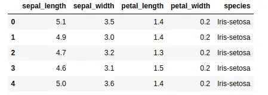
As you can see, the dataset contains information about different types of flowers. Using this data set, let’s discuss various methods for selecting data from a Pandas DataFrame.
Using the [] Operator¶
The most basic way to select data in pandas is by using the square brackets operator, []. You can use this operator to select a single column or multiple columns from a DataFrame. The simple syntax to access specific columns using the [] operator is given below:
# Syntax of [] operator to select data
DataFrame['column name']
This will select all the elements in the given column
Now let us select the species column using the [] operator:
# selecting species column
data['species']
Output:
0 Iris-setosa
1 Iris-setosa
2 Iris-setosa
3 Iris-setosa
4 Iris-setosa
...
145 Iris-virginica
146 Iris-virginica
147 Iris-virginica
148 Iris-virginica
149 Iris-virginica
Name: species, Length: 150, dtype: object
Notice that the [] operators have returned a Pandas series as output. If you want to select one column as a pandas data frame, then you need to use double square brackets.
# selecting species column
x = data['species']
y = data[['species']]
# printing the type
print(type(x))
print(type(y))
Output:
<class 'pandas.core.series.Series'>
<class 'pandas.core.frame.DataFrame'>
As you can see, the data type of the y is pandas data frame because we have used double square brackets.
We can also use the [] operators to select multiple columns. Let us now select the petal length and petal width columns.
# selecting multiple columns
data[['petal_length', 'petal_width']]
Output:
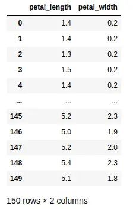
Notice that we have selected the petal length and petal width columns.
The iloc[] and loc[] methods¶
The .loc[] and .iloc[] attributes are used to select rows and columns from a data frame in the Python library pandas. They are both used to select specific rows and columns from a data frame, but they have some key differences in how they are used.
The .loc[] attribute is used to select rows and columns by their label. In other words, you select a specific row or column by its index or column name. The row you want comes first, followed by the column.
For example, if you want to select the first row, you would use the following code: data.loc[0]. This would return the first row of the DataFrame since we’ve omitted the column selector. Similarly, if you wanted to select the column called “name,” you would use the following code: data.loc[:, "name"]. This would return the entire column of “name.” Here we need to pass a slice operator in the first position as a placeholder.
On the other hand, the .iloc[] attribute is used to select rows and columns by their integer position. This means you can select a specific row or column by its numerical index, rather than its label. For example, if you want to select the first row, you would use the following code: data.iloc[0]. This would return the first row of the data frame. Similarly, if you wanted to select the third column, you would use the following code: data.iloc[:, 2]. This would return the third column of the DataFrame.
Let’s take an example and see how we can select the first five rows using the iloc[] method.
# Select the first 5 rows
print(data.iloc[:5])
Output:
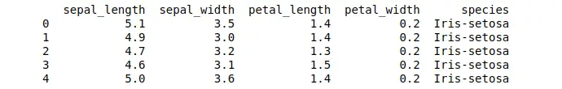
As you can see, we have selected the first five elements.
We know that in Python, we can also use negative indexing. The -1 shows the last element, the -2 second last element, and so on. We can use the negative indexing with iloc[] method to get access to the last elements as well. Let us print the last five rows from the dataset using the negative indexing.
# Select the last 5 rows
print(data.iloc[-5])
Output:

Another important feature is the multiple-row selection. Now, let us select the first three rows in only the sepal_length and petal_length columns:
# Select multiple rows and columns by index position
print(data.iloc[[0,1,3], [0,2]])
Output:
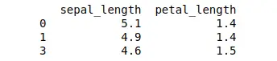
We can also use the loc[] method to select the data based on specific conditions. For example, now we will select the five rows where the species name is “Iris-setosa.”
# Select the first 5 rows where target_names is setosa
print(data.loc[data['species'] == 'Iris-setosa'].head())
Output:
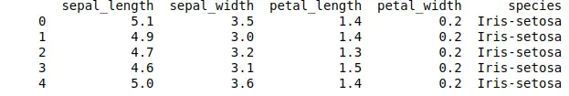
Let us also take an example, of how we can use the loc[] method to select the first five rows:
# Select a five row by label
print(data.loc[0:5])
Output:
Here is another example that shows how to select multiple rows and columns by label.
# Select multiple rows and columns by label
print(data.loc[[1,2,3,4], ['sepal_length', 'petal_length']])
Output:
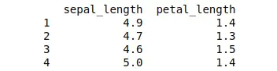
As you can see, we selected multiple columns and rows using loc[] method.
Using boolean indexing¶
In Pandas, boolean indexing is a way of filtering data in a DataFrame by evaluating a boolean expression. The expression is evaluated for each element in the DataFrame, and only the rows where the expression evaluates to True are kept. The resulting DataFrame contains only the rows that match the specified condition.
In order to use boolean indexing, we need to create a boolean expression that evaluates to True or False for each row in the DataFrame. For example, we can create an expression to select only the rows where the sepal width is greater than 3
# selecting specific width of sepal
data[data['sepal_width'] > 3]
Output:
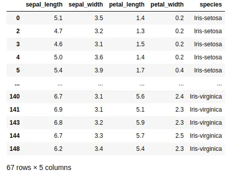
The expression data['sepal_width'] > 3 returns a boolean array where each element is True if the corresponding value in the ‘sepal width (cm)’ column is greater than 3, and False otherwise.
We can also use multiple conditions in a boolean expression. For example, we can select only the rows where the sepal width is greater than 3, and the petal width is less than 3.2:
# multiple conditions
data[(data['sepal_width'] > 3) & (data['sepal_width'] < 3.2)]
Output:
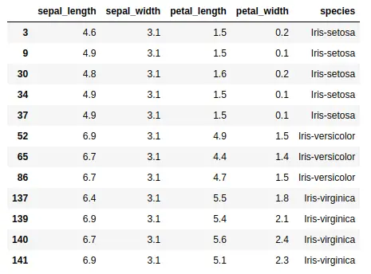
Note that we need to wrap each condition in parentheses, and use the & operator to combine the conditions.
We learned that Boolean indexing is a powerful technique in Pandas for filtering data in a data frame. It allows us to select only the rows that match a specified condition, making extracting and analyzing relevant data easy. Using boolean expressions, we can create complex filters that match multiple conditions, making it a useful tool for data analysis.
The query() method for selecting data¶
The Pandas query() method allows us to filter a DataFrame by passing a string containing a boolean expression. The expression is evaluated for each element in the DataFrame, and only the rows where the expression evaluates to True are kept. The resulting data frame contains only the rows that match the specified condition. This method is similar to boolean indexing but allows us to use a more natural and readable syntax.
The query() method takes a string containing a boolean expression as an argument. For example, we can use the following expression to select only the rows where the sepal width is greater than 3:
# query method
data.query("sepal_width > 3")
Output:
The expression "sepal_width > 3" is evaluated for each element in the DataFrame, and only the rows where the expression evaluates to True are kept.
We can also use multiple conditions in the query expression. For example, we can select only the rows where the sepal width is greater than 3 and the petal width is less than 3.2:
# multiple columns
data.query("sepal_width > 3 and sepal_width < 3.2")
Output:
Here we use the more natural “and” keyword to combine conditions.
As we’ve seen, Pandas’s query() method lets us use a more natural and readable syntax than boolean indexing, making extracting and analyzing relevant data easy.
Using the at() and iat() methods for data selection¶
The at() and iat() methods in Pandas are used to access a single value in a DataFrame by providing its index and column labels. The at() method provides fast access to the values in a data frame by taking both the row and column labels as arguments. On the other hand, the iat() method provides fast access to the values in a data frame by taking the row and column index positions as arguments. Both methods return a scalar value representing the data in the specified row and column.
The at() method takes two arguments: the row label and the column label. For example, we can use the following code to get the value of the sepal length in the first row:
# using at method
data.at[0, 'sepal_length']
Output:
5.1
The at() method is faster than using the loc[] method for single values because it does not have to return a data frame.
The iat() method takes two arguments: the row and column indexes. For example, we can use the following code to get the value of the sepal length in the first row:
# selecting the first element of the first column
data.iat[0, 0]
Output:
5.1
As you can see, we got the first element of the first column.
Using the apply() method to select data¶
The apply() method in Pandas is a powerful tool that allows you to apply a function to one or more columns in a DataFrame. It is a versatile method that can be used for a wide variety of tasks, such as data cleaning, data transformation, and feature engineering. The apply() method takes the function as its first argument and the columns to apply the function as its second argument.
We can use the apply() method with built-in Python functions to perform various operations on the columns of the DataFrame. For example, we can use the round() function to round the values in the ‘sepal_length’ column to the nearest whole number:
# applying the apply method
data['sepal_length'] = data['sepal_length'].apply(round)
# data heading
data.head()
Output:
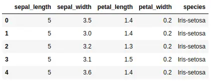
As you can see, the length of the sepals is no more floating points.
We can use the apply() method with lambda functions to perform more complex operations on the columns of the DataFrame. For example, we can use a lambda function to calculate the square of the values in the ‘sepal length (cm)’ column:
# finding the square of the length
data['squared'] = data['sepal_length'].apply(lambda x: x**2)
# heading
data.head()
Output:
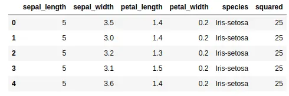
As you can see, we added a new column that contains the squares of the sepal_length column.
Using the mask() method to select data¶
The mask() method in Pandas is used to query data using a Boolean mask for a DataFrame. The mask itself is a series of True and False values that determine which values in the DataFrame should be changed or kept unchanged. The mask() method takes a condition as its argument and returns a DataFrame containing only the values that satisfy the condition.
We can use the mask() method to create a Boolean mask for a DataFrame by specifying a condition. For example, we can create a mask that selects only the rows where the ‘sepal_length’ column is greater than 5:
# mast method
mask = data['sepal_length'] > 5
# filtering
df = data.mask(mask)
# data
df.head()
Output:
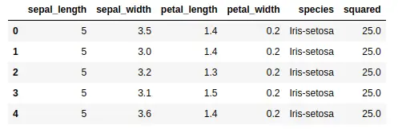
Notice that the output contains only the rows where the ‘sepal_length’ column is less than or equal to 5.
Summary¶
In summary, Pandas provides a variety of methods to select data from a DataFrame, including indexing and slicing, boolean indexing, query method, at() and iat() methods, apply method, and mask method. These methods allow data scientists to efficiently select and manipulate data based on specific conditions and requirements. Understanding the different methods and their use cases is essential for effectively working with data in Pandas.